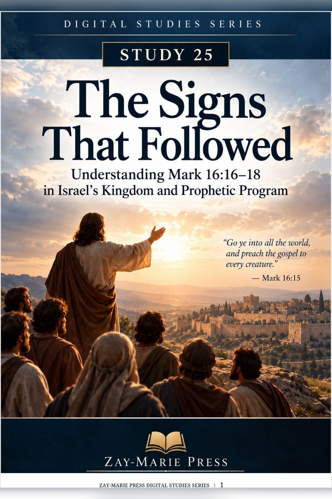
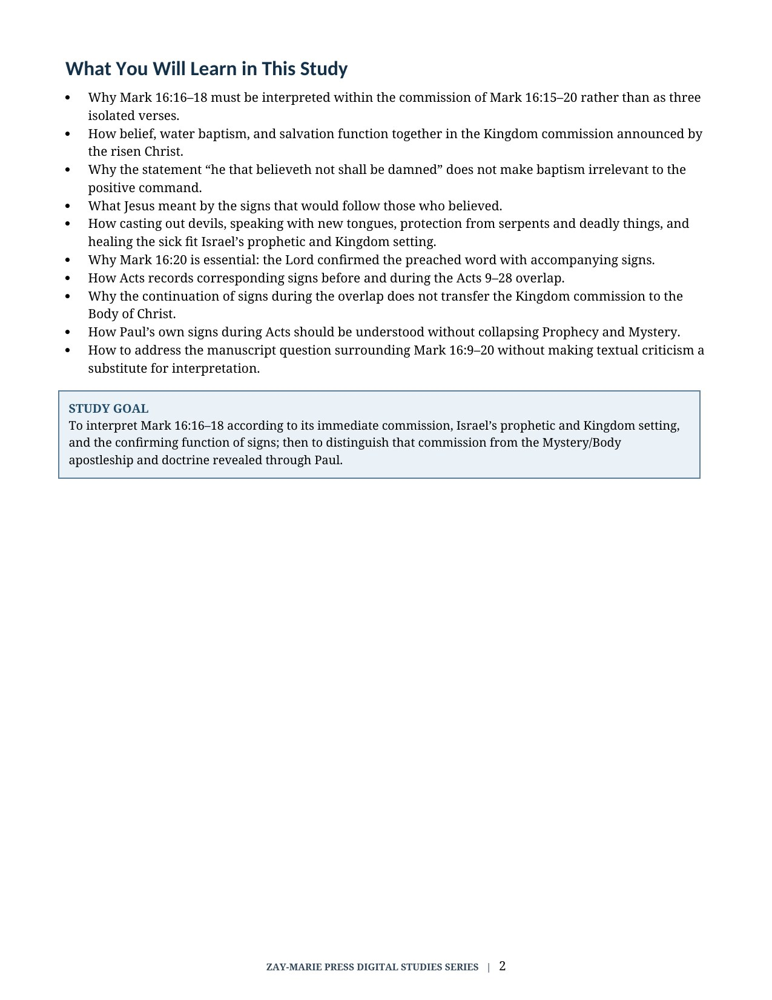
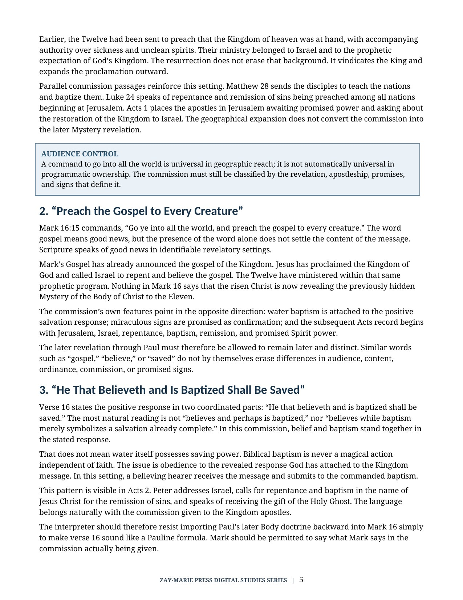
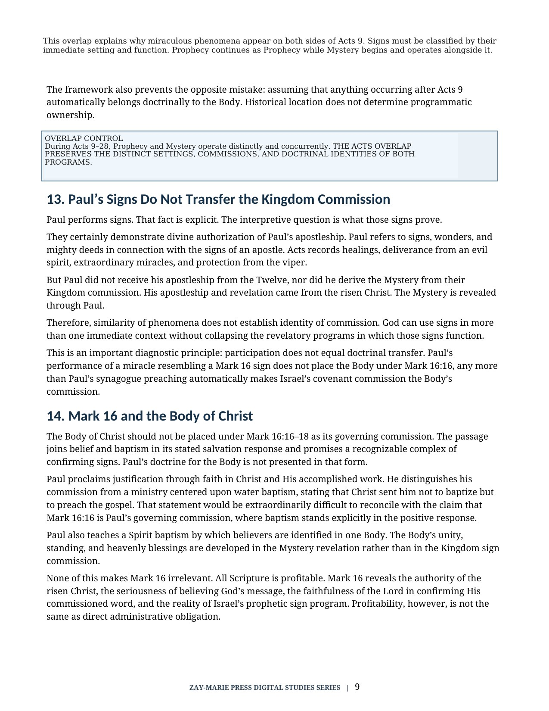
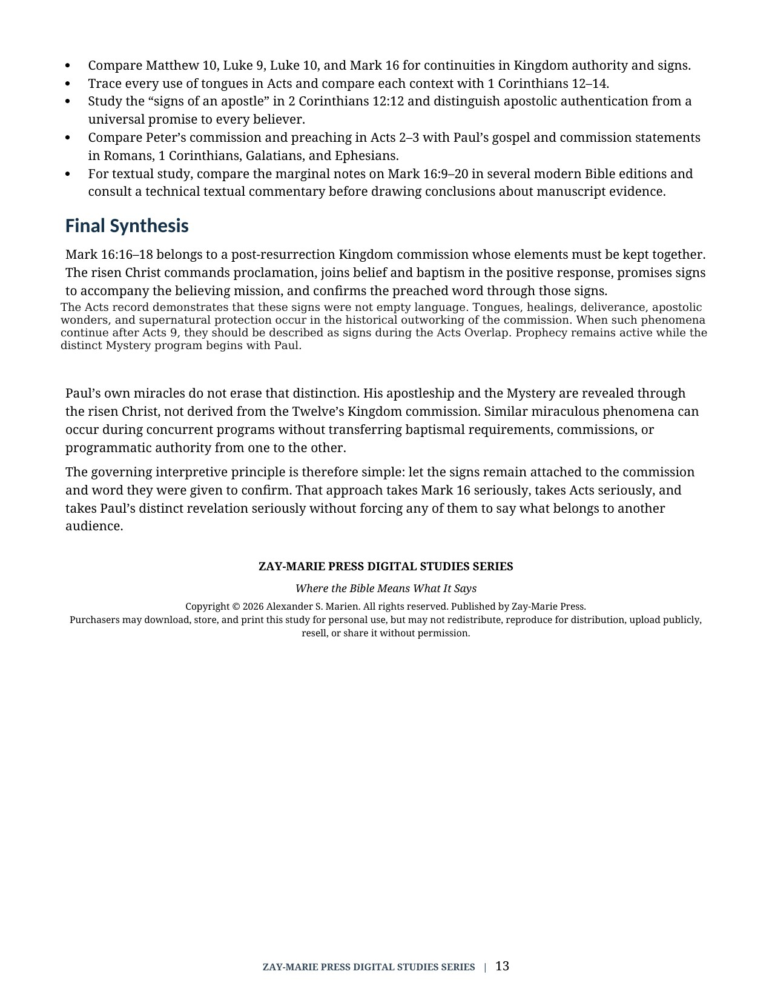

The Signs That Followed
Understanding Mark 16:16–18 in Israel’s Kingdom and Prophetic Program
A Study of Commission, Baptism, Signs, and the Acts Overlap
Mark 16:16–18 belongs to the risen Christ’s commission in Mark 16:15–20. The passage joins proclamation, belief, water baptism, promised signs, and the Lord’s confirmation of the preached word. It should be read as one connected commission rather than as isolated instructions about baptism, tongues, serpents, poison, or healing.
This study follows the commission through early Acts and the Acts Overlap. During Acts 9–28, Prophecy and Mystery operate distinctly and concurrently. Signs may occur during that period while the Kingdom commission, Peter’s apostleship, and Paul’s Mystery apostleship remain distinct.
Let the Signs Remain With the Commission They Confirm
The signs in Mark 16 are not a spectacle or a checklist for every individual believer. Mark 16:20 identifies their purpose: the Lord confirmed the word preached by His commissioned messengers.
This study examines the stated salvation response, the confirming function of each sign, their correspondence in Acts, Paul’s miraculous ministry, and the textual question surrounding Mark 16:9–20. It preserves the full force of the passage while locating the Body of Christ’s governing doctrine in the Mystery revealed through Paul.
Read Commission, Response, and Signs Together
Read the Whole Commission
Follow Mark 16:15–20 as one unit: commission, response, signs, mission, and confirmation.
Belief, Baptism, and Salvation
Examine why belief and water baptism stand together in the positive response of this Kingdom commission.
The Purpose of the Signs
See how Mark 16:20 explains casting out devils, tongues, protection, and healing as confirmation of the preached word.
Signs in Early Acts
Trace the Kingdom-apostolic witness through Acts 2–5, where signs accompany Peter’s proclamation to Israel.
Signs During the Acts Overlap
Understand why signs continue during Acts 9–28 while Prophecy and Mystery operate distinctly and concurrently.
Paul’s Distinct Apostleship
Distinguish Paul’s signs and direct calling from the Kingdom commission given to the Twelve.
Examine the Commission and Its Confirming Signs
Mark 16:15–20
Commission, salvation response, promised signs, and the Lord’s confirmation of the word.
Matthew 10:5–8
The Twelve’s earlier Kingdom ministry and authority over sickness and unclean spirits.
Matthew 28:18–20
The risen Christ’s commission to teach and baptize the nations.
Luke 24:44–49
Repentance and remission proclaimed among all nations beginning at Jerusalem.
Acts 2:1–41
Tongues, Israel’s audience, repentance, baptism, remission, and Spirit power.
Acts 3:1–26
Peter’s healing sign and its prophetic interpretation to Israel.
Acts 28:1–10
Paul’s protection from the viper and healing ministry during the Acts Overlap.
2 Corinthians 12:12
Paul’s signs, wonders, and mighty deeds as marks of apostolic authentication.
Signs Confirm the Commissioned Word
“Mark 16:20 identifies their purpose: the disciples preach everywhere, the Lord works with them, and the word is confirmed with signs following.”
The commission, its stated response, its signs, and the Lord’s confirmation belong together in Mark’s concluding account.
Preview the Study Before You Purchase
Click any page to enlarge it for reading.
{kind=link}

What You Will Learn in This Study
Begin with the reading controls that hold the commission, response, and signs together.
{kind=link}

Belief, Baptism, and Salvation
Read the positive response of Mark 16:16 within its stated Kingdom commission.
{kind=link}

Paul’s Signs and the Kingdom Commission
See why Paul’s miracles do not make Mark 16 the Body’s governing commission.
{kind=link}

Final Synthesis
Bring commission, audience, response, and sign function into their stated settings.
A Focused Study Built for
Understanding and Teaching
One Connected Commission
Read Mark 16:15–20 as a unified account rather than separating the signs from the commission they confirm.
Belief and Water Baptism
Examine the positive response Mark 16 states and its place in the Kingdom commission.
Confirming Signs
Study each promised sign and Mark 16:20’s explanation of its confirming purpose.
Early Acts Witness
Trace tongues, healing, signs, and Peter’s proclamation to Israel in the opening Acts narrative.
Acts Overlap Context
Recognize why signs occur during Acts 9–28 as Prophecy and Mystery operate concurrently.
Paul’s Apostolic Signs
Distinguish Paul’s signs and direct calling from the Kingdom commission received by the Twelve.
Textual Question
Address Mark 16:9–20’s textual history responsibly without allowing it to displace interpretation.
Teaching and Discussion Tools
Use the study summary, key distinctions, Scripture tracing, questions, and guided further study for personal or group instruction.
The Signs That Followed
Digital PDF · For personal use
Want More Than a Focused Study?
Digital Studies examine particular biblical subjects and difficult passages. The 40-lesson Biblical Hermeneutics course teaches a complete, repeatable method for establishing meaning in context, determining proper assignment, and making responsible application.